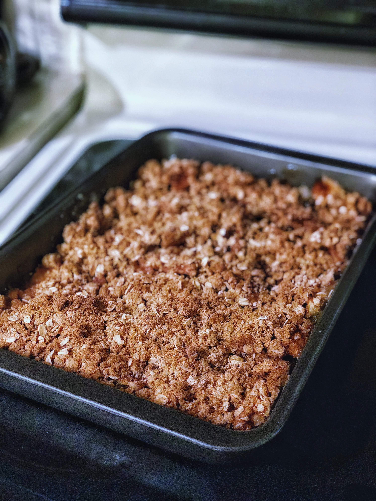

Ingridients And Methods To Make Apple Crisp II
INGRIDIENTS
10 cups all-purpose apples, peeled, cored and sliced
1 cup white sugar
1 tablespoon all-purpose flour
1 teaspoon ground cinnamon
½ cup water
1 cup quick-cooking oats
1 cup all-purpose flour
1 cup packed brown sugar
¼ teaspoon baking powder
¼ teaspoon baking soda
½ cup butter, melted
Method
- Preheat oven to 350 degrees F (175 degree C)
- Place the sliced apples in a 9x13 inch pan. Mix the white sugar, 1 tablespoon flour and ground cinnamon together, and sprinkle over apples. Pour water evenly over all.
- Combine the oats, 1 cup flour, brown sugar, baking powder, baking soda and melted butter together. Crumble evenly over the apple mixture.
- Bake at 350 degrees F (175 degrees C) for about 45 minutes.